Everything
on one hub
you own.
Aql (Arabic عقل — the mind) runs the place you're responsible for. Your gates, lights, meters, sensors and climate answer to one hub on a box in your own plant room — one app instead of six, one set of rules, one record of who opened what and when. A home, an estate, a yard, a small business.
Nothing to sign up for, nothing to pay, nothing phoning home. Gates and doors work end to end today; everything else is labelled for exactly how far it goes — the status ledger lists every line, built and unbuilt, without rounding up.
- Hub
- 1 box
- Cloud
- 0 brokers
- Accounts
- 0 required
- License
- MIT or Apache-2.0
One hub owns
everything.
A house or a whole facility under one roof: cameras, lights, gates, meters, climate, sensors and robots in one place, with one history you can actually read. Most homes end up with four apps and four accounts, none of which can tell you who opened the gate last night. This is the other shape — one box you own, one screen, one log. It already speaks to a good deal of what you have: Zigbee and Z-Wave through a bridge you may already run, meters and inverters over Modbus, ONVIF cameras, and anything with a web hook.
The figure below is drawn to say how far each kind actually gets — and nothing on it has ever been wired to a real device. Every driver is tested against stand-ins, never against a meter, a relay or a camera on a wall. The ledger spells the rest out, line by line.
- real all the way to the motor
- built, but never wired to a real device
- not built yet
Cameras built · never met a camera
Aql finds the cameras on your network by itself, and the machinery for turning a stream into clips on disk — with a retention window and a separate permission for who may watch — is written and tested. The piece that fetches video off the camera is built too — the hub opens the stream, keeps the frames, and writes them to disk. What has never happened is any of it running against a real camera: every test uses a stand-in.
Lighting on, off, dim
On, off and dim, reached through the bridge most smart lighting already sits behind — so Zigbee and Z-Wave fittings you already own need no new radio and no new hub from us. Lights land in the same list as everything else, which is why a rule can treat the porch light and the gate the same way. Scenes and groups are still whatever your bridge offers; Aql has none of its own.
Robots planned
Mowers, patrol and cleaning machines listed beside the gate and the meter, with where they are, what you've asked them to do and what they did last week. It's the thing a smart-home hub never reaches for, and the reason this project exists — and it is the one kind with nothing built behind it at all.
Climate set · read · schedule
Set a temperature and have it answer to the same schedule and the same rules as your lights and your gate, instead of to a fourth vendor app with its own login. Humidity and ventilation read back today. What has never happened is a real heat pump or extractor on the other end of it.
Energy whole software path
What the site drew, hour by hour and day by day, split between solar, grid and battery. An hour nobody measured says so instead of quietly reporting zero — the difference between a number you can take to a landlord and one you can't. Old raw readings age out; the totals you'd argue a bill from are kept. Untried on a physical meter.
Sensors read today
Movement, doors left open, temperature, damp, water level, a tampered box. These are what make an automation worth setting up at all, and reading them works over the protocols most sensors already speak. Industrial sensors are wired read-only on purpose: the hub refuses at setup to give a sensor any way to switch something.
Access runs end to end
Gates, doors and barriers — the one kind that is finished. Someone texts, or taps once in the app; your hub checks who they are and what you've allowed, then sends the small box at the gate an instruction sealed with a key that box learned from your hub and nothing else. Wrong sender, expired request, someone replaying last night's message — the gate refuses all three without asking anyone.
One screen for
the whole place.
The hub comes with this. Open it in a browser on your own network, or install the desktop app. Nobody in the household needs an account with anyone, and there is no second app to buy.
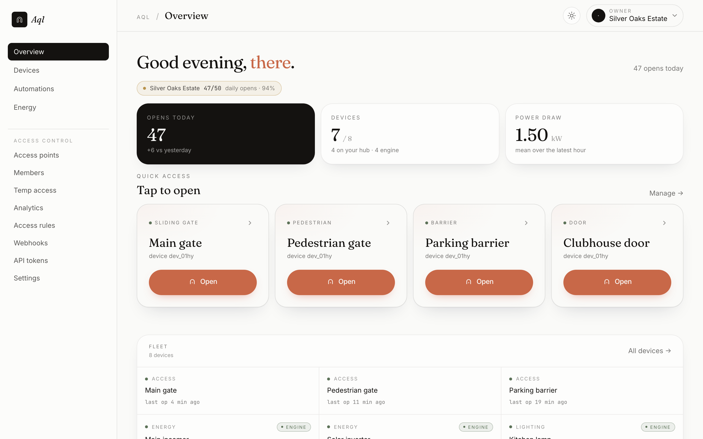
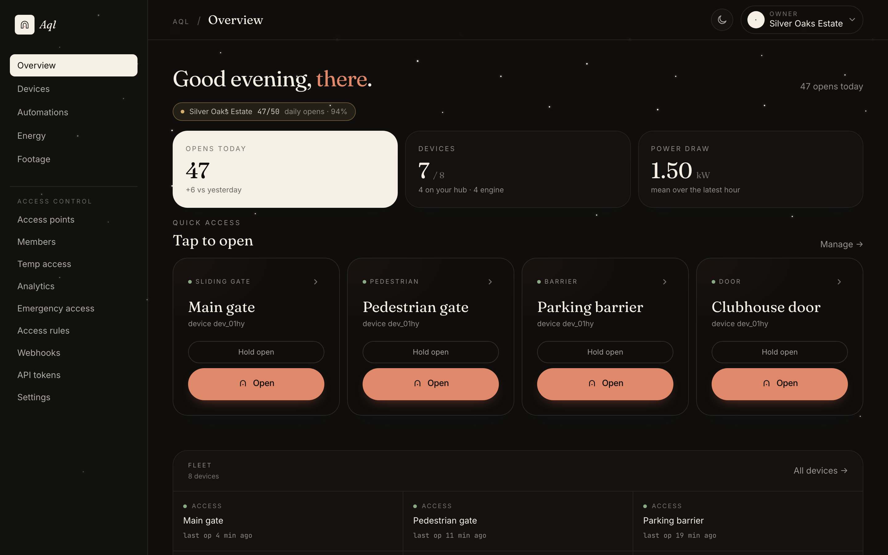
Everything on one page. Opens today, what's drawing power, which gates are online — and the gates themselves, one tap each.
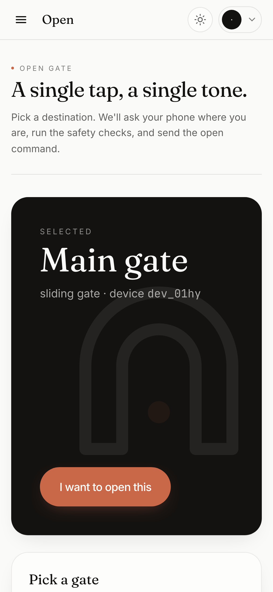

And on a phone. Pick the gate, press the button. The same console, sized for a hand at a car window.
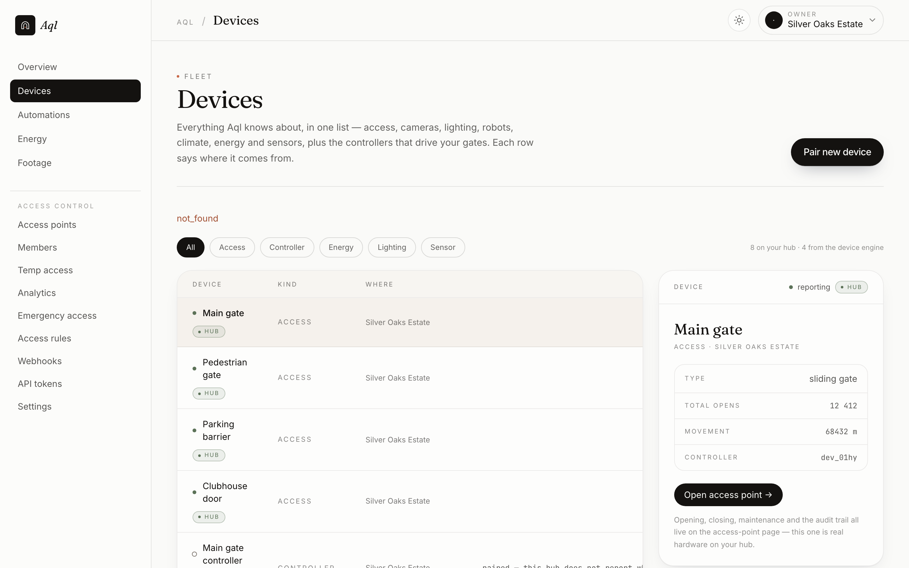
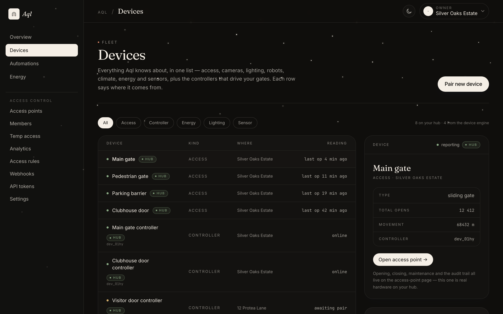
One list, not six apps. Gates, doors, controllers, meters and lights in the same place, each row saying plainly where it came from.
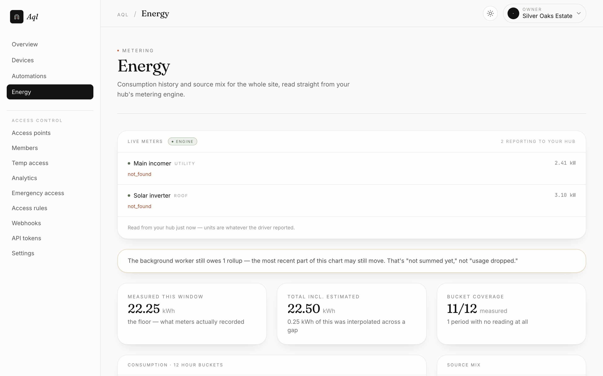
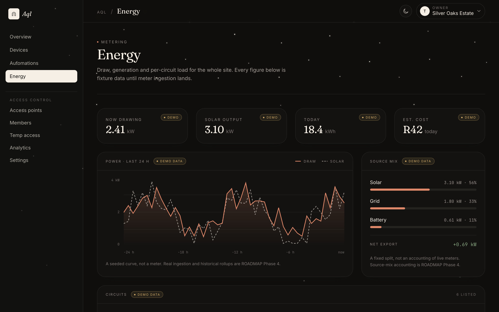
What you actually used. The measured figure and the estimated one are shown apart, and the page tells you how many hours it really saw.
These are photographs of the real console, taken from the running app — but the estate, the gates and the meter readings behind them are sample data. There is no Aql service to log into and no live site to show you; the whole point is that the only instance is yours.
Text a channel.
Reach the hub.
The hard part of running a gate was never the gate. It's the gardener, the delivery, the aunt staying a fortnight — and none of them are going to install your app or learn a code. So they don't. They message the channel you already use, and the hub works out who they are, checks what you've allowed, and opens it.
From a chat, it will open and close things — and nothing else, yet. Ask it to turn on a light and it tells you plainly that it can't, and points at the console, rather than showing you a gate menu and letting you believe it understood. Widening that is deliberately slow: every action carries a safety rating, and a surface nobody is watching doesn't get handed one it hasn't earned.
Which chat apps carry the messages is moving out of Aql into Pier, a separate piece you run or point at. That move is under way. Either way the accounts stay yours, and the hub stays the only thing that decides anything.
- A message is a request, never a permission. Your hub is the only thing that can say yes.
- The sender is matched to a person you added, before anything is allowed to move.
- Your limits — a cooldown, a cap per day — are checked first, not after.
- Every open and every refusal is written down, with the name, in the same second.
A scripted conversation, not a live hub — but the shape is the real one: work out who is asking, ask which gate they meant, seal the order, and reply with the line it wrote in the log.
Access control,
end to end.
One of the seven kinds is finished: gates, doors and barriers, from someone asking to the motor turning. Between the two sit your rules and a sealed instruction nothing else on the network can produce — which is what lets a hub give orders to a box at the end of a driveway without trusting a single thing in between.
-
01
An intent arrives
A resident texts
open, or taps it in the console. However it arrives, it is a request and nothing more — on its own it cannot move a thing. -
02
Your rules decide
Is this someone you added? Are they allowed this gate, at this hour, from somewhere near it? Have they used up the cooldown or today's opens? Yes or no, the answer goes into the log with their name on it — the refusals as carefully as the opens.
-
03
The gate gets a sealed order
Not an instruction anyone on the network could have sent: a sealed one, good for under a minute and usable once. The box at the gate checks the seal against a key it learned from your hub, refuses if anything is off, and clicks the relay. It dialled out to reach your hub, so there is no open port at the gate for anyone to go looking for.
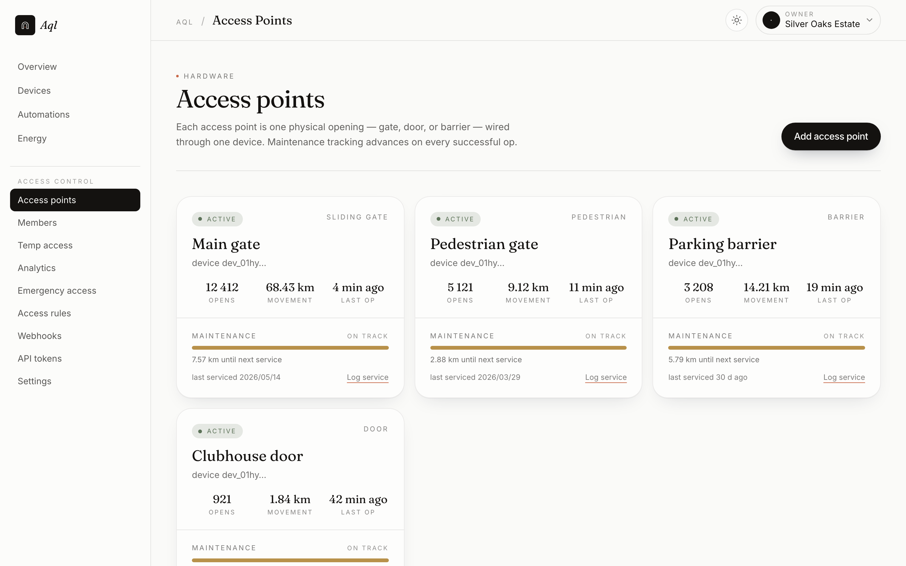
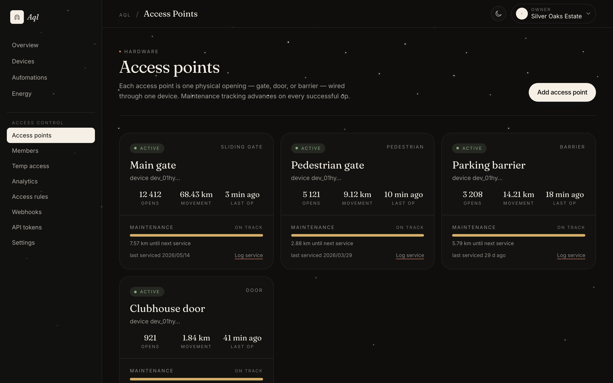
Every opening, and what drives it. A gate is an access point with a controller paired to it — so the page that lists your gates is also the page that tells you which one has stopped answering.
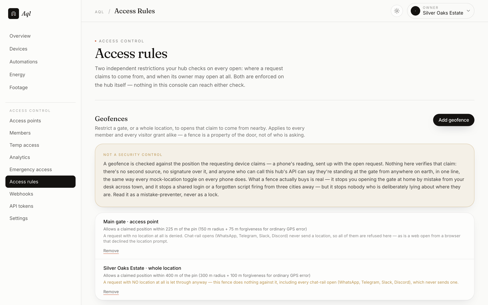
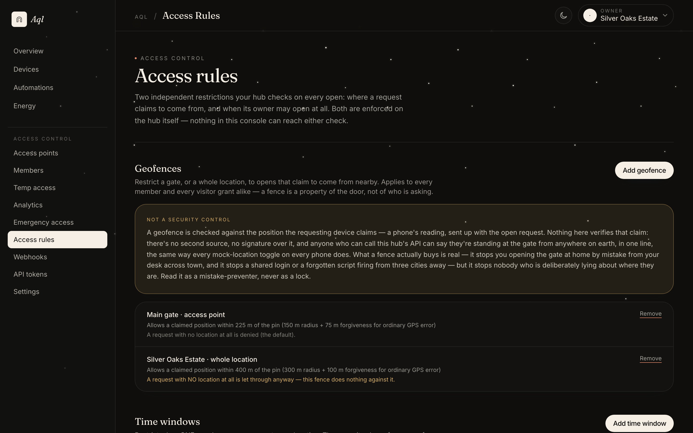
Rules you can read back. Where someone has to be standing, and when they may come in. Both are checked on your hub, on the way through, not on the phone that asked.
The gate still
opens.
A cut fibre, load-shedding, a router that has had enough — a hub that only answers when the line is up isn't really yours. So your phone carries a dated pass, sealed by your hub while everything was fine. At the gate it proves that pass to the gate itself, over your own Wi-Fi or Bluetooth. No internet, no hub, nobody in the middle.
-
1
Set it up before you need it While the hub is reachable, it seals a pass naming which gates this person may open and until when, tied to that phone and no other. It lasts a week and is renewed every time the app opens online — so revoking someone still takes effect immediately on the normal path, and within the week on this one.
-
2
At the gate, with nothing working The app finds the gate itself — on the same Wi-Fi, or over Bluetooth when there is no network at all — and asks it to open.
-
3
The gate asks a question back A different one every time, good for thirty seconds and answerable once. Which is why holding the pass is not enough on its own.
-
4
The phone answers it Signed with the phone's own key. Anyone who recorded last night's exchange and plays it back at the gate gets nothing.
-
5
Check, then open The gate checks the seal, the expiry, what the pass actually allows, and the answer — in that order, refusing at the first thing that is wrong — and opens. The event is kept locally and sent up when the line comes back, so the log is complete either way.

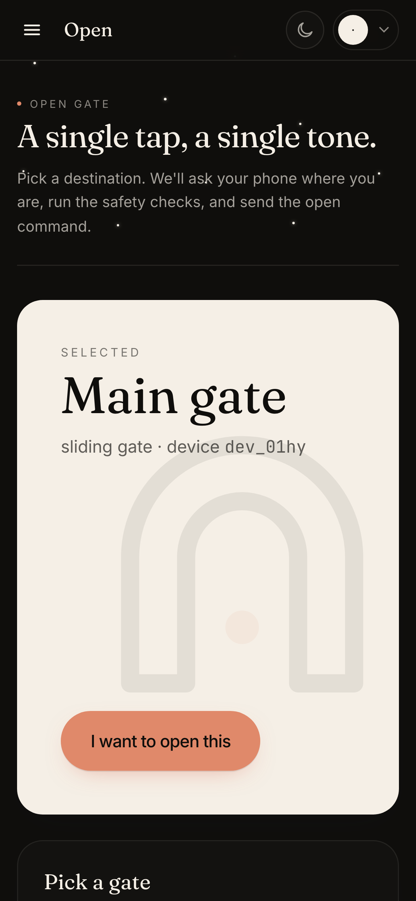
The screen that does it. It also tells you, on the spot, what this particular build of the app cannot do — which is the only kind of warning worth having about an outage.
Status — honestly
- The pass itself is real. Its format, your hub issuing it, and the gate checking it are built — and checked against fixed test vectors both sides have to agree with independently.
- Your phone can hold one. Asking for a pass and keeping it works. Presenting it at the gate works from the desktop app, and from a browser on your own network when the console is served over plain http.
- Bluetooth is half-done. The exchange is written and tested; the radio has never run on real hardware. A browser tab can't speak Bluetooth or find a gate by name either — that part needs the app.
- No real gate, yet. Nothing in this repository has been wired to an actual relay or barrier. Everything above it is tested; that last inch is not.
Aql sits in parallel with your existing gate hardware, never in series with it — the local button and any code-required fail-safe egress keep working on their own, and are never something this replaces. Full status →
No broker.
No account.
One program and one file, on hardware you can put a hand on: a small VPS, a Raspberry Pi behind the couch, a box in the plant room. There is no Aql service to sign up for, no price list, and nothing that phones home. If this project vanished tomorrow, your gate would go on opening exactly as it does today.
# one binary, one SQLite file
git clone https://github.com/vul-os/aql
cd aql/hub && go build -o ../aql-hub ./cmd/hub
# loopback by default — this binary serves plain HTTP
../aql-hub -listen 127.0.0.1:8080 -data ./data
# TLS is yours: a reverse proxy, or any tunnel you trust
caddy reverse-proxy --to 127.0.0.1:8080
✓ hub up console + API on 127.0.0.1:8080
✓ signing key ./data (ed25519, 0600, first boot)
✓ audit log ./data (sqlite, one file to back up)pre-1.0 — flags and paths can still move · see docs → run your hub
-
Bring your own channel If you want chat, it runs on your own workspace, your own bot, your own business number — billed by whoever provides it, at their price, never through us. The rails themselves are moving to Pier, a separate piece you can swap out or leave off entirely.
-
No fixed address? Still a full install The box at the gate always dials out to your hub, never the other way round — so a Pi on the house network with nothing forwarded is a complete installation. A landlord's router, a carrier that won't give you a real address, a firewall nobody will open: none of them stop the gate working. What needs a public address is reaching the console from outside.
-
Encryption is yours, on purpose The hub carries no certificate machinery of its own, and flatly refuses to answer anything but your own machine until you tell it something in front is handling that. Put whatever you already trust there — Caddy, nginx, cloudflared, Tailscale. Fewer moving parts, and one less way to serve a login page in the clear by accident.
-
Nothing to pay, nothing to report No billing code, no tiers, no licence check, no analytics beacon and no account with us — there is no “us” anywhere in the running path. Your costs are the box itself and, if you want chat, your own account with whoever carries the messages.
The whole truth,
on one page.
Aql is early, and early projects that oversell are how people end up with a gate that won't open. So here is the ledger — built and tested on the left, still only a design on the right. Read the right column before you decide. Two things are true of both: every claim on this page is checked against the code in CI, and not one line of it has ever been wired to a real device.
Built & tested real
- The hub. One Go binary, one SQLite file: accounts, members, invites, locations, access points, device pairing and the controller registry — 111 HTTP routes over 19 migrations, and more than 870 tests green across 16 packages.
- Signed commands. Ed25519 envelopes carrying a nonce and an expiry capped at 60 seconds. The controller pins the hub's key at pairing and verifies fail-closed, in a fixed order.
- The reference controller. Its own Go module, over 120 tests green: dials out, pins the hub's key, verifies in a fixed order. The GPIO relay driver is written — the kernel uAPI layout is asserted at compile time on arm, arm64 and 386 — but the last inch is still unproven: no build in this repo has driven a real relay or a real gate.
- Offline-grant issuance. The hub issues a signed 7-day grant through the same authorization gates as a live open, and the controller's eleven-step verification is built and tested.
- Conformance vectors. 98 checks in
proto/across pairing, commands, grants, events, acks and webhooks, consumed by the implementations and by an independent verifier that trusts none of them. - Chat as an input surface. A message resolves to a member, passes the open path and becomes a signed command — and the per-channel rails are moving out to Pier. That move is in progress, so read this as the behaviour being real, not as a claim about which binary carries an adapter this week.
- Device control from chat, up to a tier. Lights, climate and the rest of the engine answer a message, one device or a whole zone at a time. The safety ladder decides how: a reversible verb runs and is audited, a consequential one waits for a single-use token that expires in a minute, and hazardous motion is refused outright and sent to the console, where an operator arms a window for it. A partial zone run reports both numbers and names what did not take.
- Rules and audit. Open cooldown, hourly caps, optional per-location quotas — and a SHA-256 hash-chained, append-only log of every open, denial, pairing and config change, verifiable from a cold backup.
- Temporary access grants. A dated window for a named person, with an optional use cap, revocable, refunded on a rate-limit denial.
- The device engine and four drivers. The registry, the internal model and the capability catalogue that assigns every verb a safety tier — with MQTT (including anything a
zigbee2mqttbridge republishes), Modbus TCP, generic HTTP and ONVIF discovery behind it. - The automations runtime. Rules, a scheduler and an execution engine that runs them against live device state, with a failure budget, a cooldown and a run history. It refuses to actuate anything above its tier ceiling, so “open the gate at 07:00” is deliberately not expressible.
- Energy metering. Meter ingestion, hourly and daily rollups and a solar/grid/battery source mix, measured rather than estimated — every bucket carries how much of it was actually observed, and raw samples are pruned on a retention window while the counter endpoints a bill is argued from are kept.
- Geofencing and recurring time windows. Both enforced inside the same choke point as every other limit. Geofencing is a convenience and not a security control — the position it tests is client-supplied and unverified, so it stops mistakes, not attackers.
- The app half of offline access. A routed screen requests, holds and presents a grant. Presenting works in the desktop app and in a browser over the LAN when the console is served over http; an https console cannot reach a plain-http controller, and BLE needs the app.
- A cross-module test harness. Boots the real hub and controller binaries and drives the open path over the wire, adversarial cases included.
Not built yet planned
- Watching a camera. Aql finds cameras and works out where their video lives, and the machinery for turning a stream into clips on disk — retention, a separate permission to watch — is written and tested. Fetching the video off the camera is built as well, and so is a recent live view. What is missing is a real camera: a fake written from the same spec as the code only agrees with itself, so nothing here counts as proof until it meets hardware.
- Robot tasking. The one kind of the seven with no path at all: no driver, and nothing underneath the status in the design.
- Matter, and native Zigbee or Z-Wave radios. Matter needs a certified device and a stack. The radios are reached through a bridge instead, and the hub is not getting one — though discovery only reads
zigbee2mqtt’s announcement format, so a Z-Wave fleet is configured by topic rather than listed for you. - Presenting a grant from an https console, or over BLE in a browser. The first is mixed content and no header fixes it; the second needs native code. Both are why the desktop app exists.
- One-time PIN and QR passes. Designed. Today's temporary access needs to know who you're granting it to.
- Mobile builds and first-class Zana support. On the roadmap, in no binary.
This ledger is written against ROADMAP.md and ARCHITECTURE.md in the repo, and the repo runs a docs-versus-code claim check in CI. If you find something here that the code doesn't do, that's a bug worth an issue.
Aql is the brain.
Zana is the body.
Zana is the open-hardware companion project: designs for the machines a hub like this is worth having — robot mowers, sensor nodes, security and cleaning machines. Published designs, so the thing driving around your garden isn't a black box either.
The two are deliberately not welded together. Aql is meant to control anyone's hardware; Zana devices are simply the ones designed against it first. First-class Zana adapters are a roadmap item — no Zana-specific code is in Aql today.
The things
people ask first.
Answered the way they would be answered in person, in the order people actually ask them — including the ones where the honest answer is that the thing you are asking about isn't built yet.
Isn’t this just Home Assistant?+
Same instinct — your devices, your box, nothing in the middle — and Home Assistant is a mature project with hundreds of integrations working today, which Aql very much is not. Two things are different here. The reach: a mower, a patrol robot, a barrier at a business are meant to be first-class, not consumer gadgets bolted on. And the way it gives orders: every instruction is sealed, and the box at the far end checks the seal against a key it learned from your hub, which is what makes it safe to command a gate across a network you don't control. If you want a full smart home working this weekend, use Home Assistant. If those two things are what you're after, this is that project, early.
What actually works today?+
Gates, doors and barriers, from someone asking to the motor turning — with your rules, your limits and a complete record either way. Underneath that, the engine the other kinds run on is live: lights switch and dim, sensors and meters read, setpoints set, and automations run on a schedule against all of it. What isn't there is watching a camera and anything to do with robots. And the caveat that matters most: no part of this has ever been connected to a real gate, meter, relay or camera. The ledger above is the complete list, both columns.
What do I actually need to buy?+
For the gate: a small computer at the gate — a Raspberry Pi-class board is plenty — wired to your gate motor's push-button input, on Wi-Fi or a cheap data SIM. And somewhere to run the hub: the same kind of box in the house, or a small server you rent. That's it. No Aql hardware exists, nothing needs to be bought from us, and nothing is licensed.
What does it cost?+
Nothing, to us. There is no price list, no tier, no licence check and no billing code anywhere in the software — it's open source under MIT or Apache-2.0 and you can read every line. What you pay for is the hardware you chose and, if you want people to reach it by chat, your own account with whoever carries those messages, billed by them at their price.
Do I need an account, or a cloud?+
Neither. There is no Aql service to sign up for and nothing sitting between you and your own hardware. You run the program; it keeps everything in one file on your own disk and makes its own keys the first time it starts. Nothing phones home. If this project disappeared, your hub would carry on working.
What happens when the internet is down?+
Your phone carries a dated pass, sealed by your hub while things were working. At the gate it presents that pass to the gate directly, over your own Wi-Fi or over Bluetooth — no internet, no hub, nobody in the middle. Honestly, today: the pass and both ends of the exchange are built and tested, holding one works, and presenting it works from the desktop app and from a browser on your own network. The Bluetooth radio has never run on real hardware. And separately from all of it, Aql never sits in series with your gate: the button on the wall and any legally required escape route keep working on their own. Full status.
Does everyone need to install an app?+
No — that's the point of letting people reach it by chat. A visitor, a gardener or a delivery driver messages from something already on their phone. The only things anyone installs are the small box at the gate, the hub on your own machine, and optionally the desktop app if you'd rather administer it that way.
Will it work with my gate?+
If your gate, door or barrier has a push-button or dry-contact input — and most do — then in principle yes: the box at the gate closes that contact for you, exactly as the button on the wall does. In practice, take that as a design, not a promise: nothing in this project has been wired to a real gate motor yet. The code that drives the relay is written and its low-level layout is checked at build time on the boards it targets, but the last inch between software and a moving gate is still unproven.
Is it safe enough for a real site?+
It was designed for the case where the network is hostile. Every instruction is sealed, expires in under a minute, works once, and is checked by the gate against a key it learned from your hub — so a tampered network, a hijacked domain name or a malicious tunnel can't make your gate move. Everything that talks to the hub proves who it is before it is read, the record of what happened is chained so it can't be quietly rewritten, and the hub refuses to answer the outside world in the clear. It is also young code that no outside party has audited, and it has never met real hardware. Read the security chapter and decide for yourself.
So when do cameras and robots work?+
There are no dates, because none of it is scheduled — this is built in the open, not shipped to a plan. What the shape tells you: gates were finished first because that is where getting it wrong is worst, and the pieces that forced into existence — one list of devices, a pairing ceremony, sealed instructions, a record nobody can edit — are the same pieces every other kind needs, and they now exist. The roadmap goes phase by phase.
What’s Zana?+
The open-hardware half of the same idea — designs for robot mowers, sensor nodes and security or cleaning machines. Aql is meant to control anyone's hardware; Zana devices are simply the ones designed against it first. Support for them is a roadmap item, not code in the binary today. github.com/vul-os/zana.